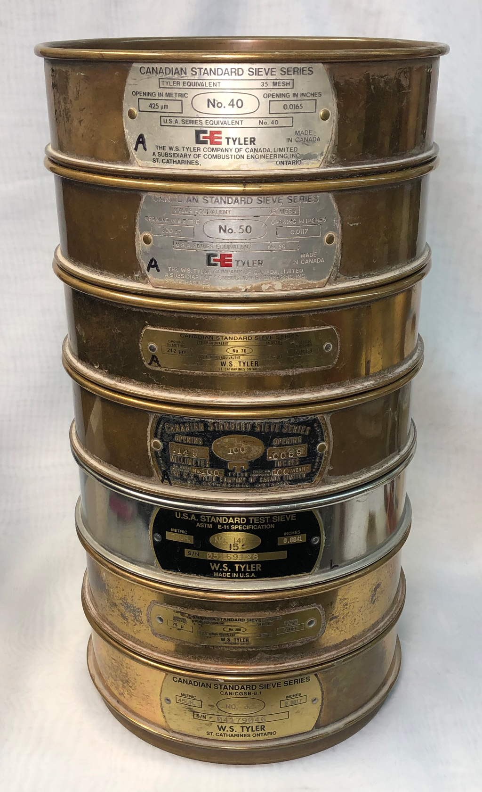
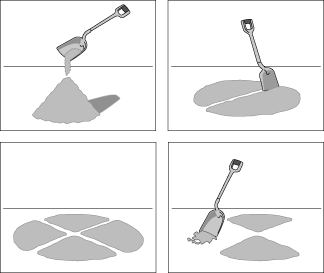
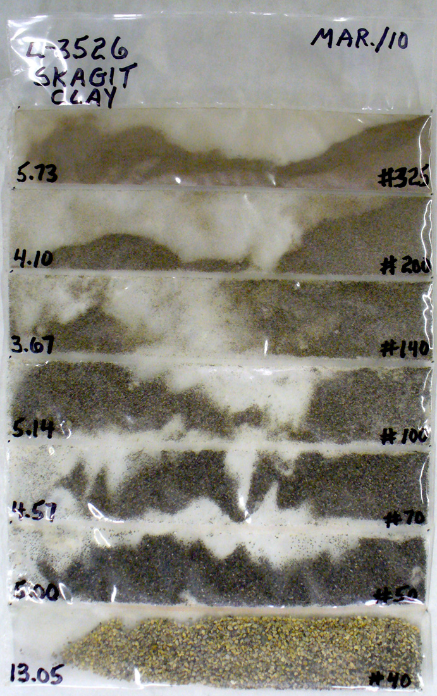
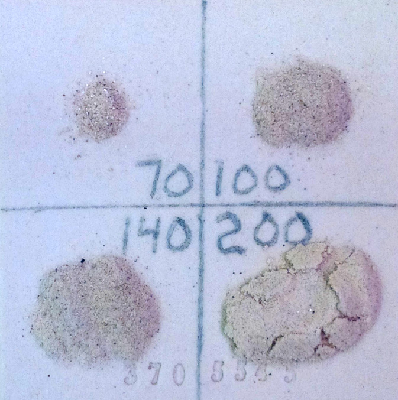
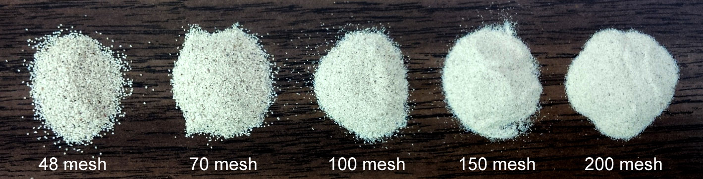
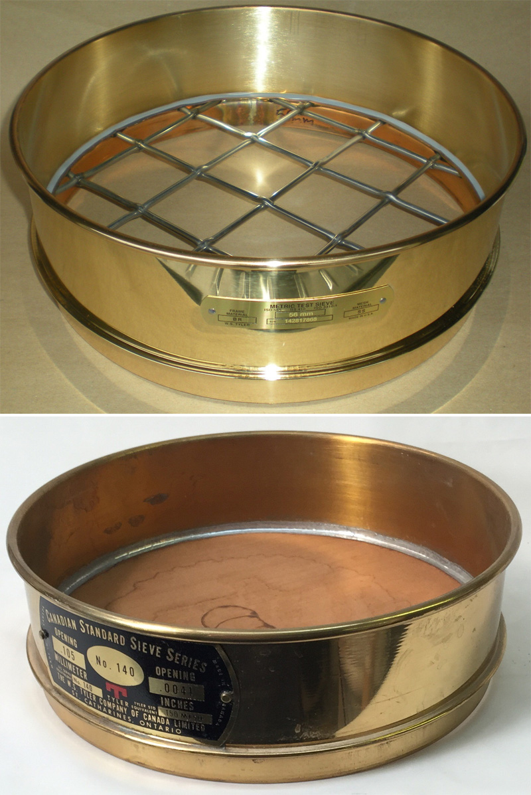

SIEV - Sieve Analysis 35-325 Wet Test
This is a good standard test to measure physical particle size distribution in clay bodies and materials (not ultimate particles). Wet sieving is more reliable than doing a dry sieve analysis (at least where information on finer sizes is needed), this is because of particle agglomerates that dry shaking fails to break down and the mechanical issues of passing dry particles through openings barely bigger than they are (especially if they are oblong). See ASTM E-11.
Sieves are rated according to the number of wires per inch. At around 100 mesh the wires become invisible to the human eye (at least most human eyes). Thus, a 325 mesh screen has incredibly small openings.
A root-of-two series of test sieves

This picture has its own page with more detail, click here to see it.
The coarsest screen is at the top, the finest on the bottom. The top one has an opening of 425 microns (thus 425 micron and finer particles will pass through it, +425 micron particles will not). Its opening area is 180,000 square microns (425x425). Going downward, the openings have areas half that of the one above (thus, for the second, the opening area is 300x300=90,000 microns). Structural products industries, like brick, measure coarser particles than this, using 10-70 mesh. Using this series one can produce a standard measurement of the distribution of particle sizes in a material powder. The finer sieves (from 100-325) are only practical for wet processing (where the powder is water washed through the stack). In Insight-live the SIEV test (water washed) uses this series of sieves.
Preparing a representative sample of dry material

This picture has its own page with more detail, click here to see it.
Repeat a cycle of layering to create a pile of material, quartering it, removing opposite quarters and remixing. Do this until the amount needed for testing is achieved.
Skagit Fireclay PSD test

This picture has its own page with more detail, click here to see it.
Particles from each category in a particle size distribution test of Skagit Fireclay
Could these bentonite particles cause specking in a porcelain?

This picture has its own page with more detail, click here to see it.
The stated particle size of a material and fired appearance can both be misleading. For example, these are Volclay 325 bentonite particles fired to cone 8 oxidation. They are from a water washed sieve analysis test, the oversize particles from a 325 mesh screen (left) make up 2% of the total and 1% are from the 200 mesh screen (right). Although the 325 particles appear ominously dark, individually they are likely to small to produce apparent fired specks in a porcelain. However 200 mesh sizes can produce visible fired specks, but that fraction of oversize does not have nearly as high iron or flux content. Still, the finer darker particles could agglomerate, it might be better to use a cleaner bentonite to plasticize a porcelain.
Ball clay powders are minus 200 mesh. Right? Wrong!

This picture has its own page with more detail, click here to see it.
These are the oversize particles (from the 79, 100, 140 and 200 mesh sieves) from 100 grams of a commercial Gleason ball clay. They have been fired to cone 8 oxidation. There is 1.5 grams total, this is within the limits stated on their data sheet even though the material is sold as 200 mesh grade. Firing the samples shows whether the particles contain iron that will produce specking in porcelains and whiteware. In this case there are a few. We do this test on many materials and this is typical of what we see.
Watch out for iron particles in ball clays

This picture has its own page with more detail, click here to see it.
These are the oversize particles (from the 70, 100, 140 and 200 mesh sieves) from 100 grams of a commercial ball clay. They have been fired to cone 10 reduction. As you can see, this material is a potential cause of specking, especially in porcelain bodies. It is not only wise to check for oversize particles in clays, but firing these particles will reveaal if they contain iron. A 200 mesh screen would be a good start for this test, it would catch all of these.
Oversize particles in a typical manufactured porcelain body

This picture has its own page with more detail, click here to see it.
Example of the oversize particles from a 100 gram wet sieve analysis test of a powdered sample of a porcelain body made from North American refined materials. Although these materials are sold as 200 mesh, that designation does not mean that there are no particles coarser than 200 mesh. Here, there are significant numbers of particles on the 100 and even 70 mesh screens. These contain some darker particles that could produce fired specks (if they are iron and not lignite); thank goodness in this case they do not. Oversize particlate is a fact of life in bodies made from refined materials and used by potters and hobbyists. Industrial manufacturers (e.g. tile, tableware, sanitaryware) commonly process the materials further, slurrying them and screening or ball milling; this is done to guarantee defect-free glazed surfaces.
Large particle grogs are difficult to produce

This picture has its own page with more detail, click here to see it.
These particles are from a grog that has been milled and separated into its constituent sizes in the lab. As you can see it has a wide range of particle sizes, from 48 to finer than 200 mesh. When fired ceramic (like bricks) is ground the finer sizes often predominate. Because the coarser grades have a lower yield they can be much more expensive and harder to get. But they are the most effective in reducing the drying shrinkage and fired stability of structural and sculptural bodies.
This is what labs use to measure particle size

This picture has its own page with more detail, click here to see it.
To measure particle size in a slurry or powder you need sieves. This is the most popular type used in labs. They are made from brass by a company named Tyler. The range of screen sizes for testing particle size is very wide (obvious here: the top screen has an opening of 56 mm, the bottom one 0.1 mm - the wires are almost too small to see). You can often buy these used on Ebay for a lot less than new ones, search for "tyler sieve". The finer sieves (especially 200) are fragile and more easily ripped. For potters it is good to have a 50, 100 and 150.
Variables
TOT - Total Weight (V)
The total weight of powder washed through the screens. When weighing, add the water content to the total weight. For example, if the water content is 2.5%, then weight out 102.5 grams.
35M - 35 mesh (V)
The residue left on the 35 mesh screen after drying.
48M - 48 mesh (V)65M - 65 mesh (V)
100M - 100 mesh (V)
150M - 150 mesh (V)
200M - 200 mesh (V)
325M - 325 mesh (V)
NOTE - Note (V)
Use this to iddentify each specimen if more than one was done.
Procedure
1. Purpose
This test is best done using a Data Collection Fill-In form. Collect data on a number tests, then enter this into the computer in a batch.
Related information on the theory, purpose, procedure and interpretation for this test is available in the Magic of Fire II book.
2. Scope
2.1 This test is done to assess particle size of incoming material.
3. Definitions
3.1 TYLER SIEVE NUMBER
A standard sieve numbering system using the W.S. Tyler Sieve Company.
3.2 MESH
The number of wires per inch on a testing sieve.
4. Responsibilities
4.1 This procedure is carried out by the quality control technician on powder or dry samples provided by the receiver or collected in production.
5. Procedure
5.1 If the material is supplied as a chunk of dry clay:
5.1.1 Break the chunk into small pellet no bigger than 3-4 mm and weigh out 100 grams.
5.1.2 Continue as for powder sample.
5.2 If the material is provided as a pugged wet sample:
5.2.1 Roll the pugged clay into a thin slab (about 5 mm) and dry it.
5.2.2 Continue as above for dried chunk.
5.3 Wash powder through sieves
5.3.1 Weigh 100 grams of powder or broken chunks and pour it into about a litre of water. Let stand for a few minutes for powder, for an hour for pellets.
5.3.2 Wash the water/powder mix through the 325# screen until all minus 325 material is gone. If some pellets do not break down well, wash with hot water, or dry the sieve as is and wash a second time.
5.3.3 Reverse wash the oversize material back into the water container.
5.3.4 Stack the sieves from finest to coarsest, with finest at the bottom, and wash the plus 325 material through the stack. Thoroughly spray the material on each sieve to encourage all finer material to fall through each.
5.3.5 Dissassemble the stack of sieves and set in warm area to dry.
5.3.6 Write the material iddentification on a new line on the SIEV logsheet.
5.3.7 Use a brush to remove the oversize material from each screen and weigh it. Write the weight on the logsheet.
5.3.8 Enter the data into the computer using the correct ID# for the body or material. If an ID# does not already exist, assign one.
5.4 Equipment
5.4.1 Tyler root of two series of interlocking testing sieves with soft seive brush.
5.4.2 .01 gram balance
5.4.3 Drying area
5.4.4 Spraying hose and sink
5.5. Safety
5.5.1 Brass sieves can get very hot if dried near a heat source; be careful not to get burned.
5.5.2 Mixing clay/water slurries can generate a lot of dust. Take measures to reduce it and not breathe it.
5.6. Workmanship
5.6.1 Carefully wash all material through each sieve with a repeated back and forth motion.
5.6.2 Do not use too high pressure as this could splatter some of the material out of the sieve.
5.6.3 Wash all material through the finest sieve first, then stack them all up and wash the remainder through. This is a necessity to prevent blinding that causes water overflows and material loss on the finer meshes.
5.6.4 Wash the oversize to the centre of each sieve so it can more easily be brushed out when dry.
5.6.5 If drying is done near a hot kiln, be careful that the temperature will not be high enough to melt the solder on the sieves.
5.6.6 Use the brush carefully on the finer sieves to avoid damaging them.
5.6.7 Watch carefully for rips in the sieves, especially around the edges. Repair with hot glue if necessary.
5.6.8 Watch the stacking order carefully to be sure the sieves are in order during washing.
6. Reference Documents
Test Definition Report,
Test Procedure Report,
Data Collection Fill-In Form Report.
7. Reason for Re-issue
Temp 1 Initial Draft
Temp 2 Spelling and Grammer check and minor revisions.
Temp 3 Adjustment in data collection process due to better data entry facilities in the software.
Related Information
Videos
Links
| Articles |
Simple Physical Testing of Clays
Learn to test your clay bodies and clay materials and record the results in an organized way, understanding the purpose of each test and how to relate its results to changes that need to be made in process, recipe and materials. |
| Articles |
How to Find and Test Your Own Native Clays
Some of the key tests needed to really understand what a clay is and what it can be used for can be done with inexpensive equipment and simple procedures. These practical tests can give you a better picture than a data sheet full of numbers. |
| Articles |
Setting up a Clay Testing Program in Your Company or Studio
Set up a routine testing pipeline and start generating historical data that will enable your staff to understand your source materials and maintain, adjust and troubleshoot your clay body recipes. |
| Tests |
% Passing 325 Mesh Wet
The amount of particulate material left on a 325 mesh sieve after washing through a measured amount of the powder. |
| Tests |
Hegman Fineness
|
| Tests |
Ultimate Particle Size Distribution
|
| Tests |
Sieve Analysis Dry
A measure of particle size distribution by vibrating a powdered sample through a series of successively finer sieves |
| Tests |
Sieve Analysis Wet
A measure of particle size distribution by washing a powdered or slaked sample through a series of successively finer sieves |
| Tests |
Average Particle Size (Microns)
|
| Tests |
Wet Sieve Residue
Make a quick determination of oversize particles by washing a measured amount of powder through a 150 or 200 mesh sieve. |
| Materials |
Kaolin
The purest of all clays in nature. Kaolins are used in porcelains and stonewares to impart whiteness, in glazes to supply Al2O3 and to suspend slurries. |
| Materials |
Ball Clay
A fine particled highly plastic secondary clay used mainly to impart plasticity to clay and porcelain bodies and to suspend glaze, slips and engobe slurries. |
| Typecodes |
Particle Tests
Tests conducted to determine particle populations, sizes, shapes, densities, surface areas, etc. |
| Typecodes |
Body Tests
Tests conducted on bodies made from materials, as opposed to the materials themselves. |
| URLs |
http://en.wikipedia.org/wiki/Mesh_(scale)
Tyler and US sieve mesh and conversion information at Wikipedia |
| URLs |
https://insight-live.com/insight/help/It+Starts+With+a+Lump+of+Clay-433.html
Case Study: Testing a Native Clay Using Insight-Live.com |
| Glossary |
Splitting
|
| Glossary |
Representative Sample
|
| Glossary |
Particle Size Distribution
Knowing the distribution of particle sizes in a ceramic material is often very important in assessing its function and suitability for an application. |
| Glossary |
Sieve
Sieves are important in ceramics for removing particulates and agglomerates from glaze, engobe and body slurries. |
 PayPal | No tracking, No ads, No paywall, No transient content! Just organized, concise information constantly updated and improved. Was this helpful? Consider supporting me. |
| By Tony Hansen Follow me on        |  |
Got a Question?
Buy me a coffee and we can talk 

https://digitalfire.com, All Rights Reserved
Privacy Policy